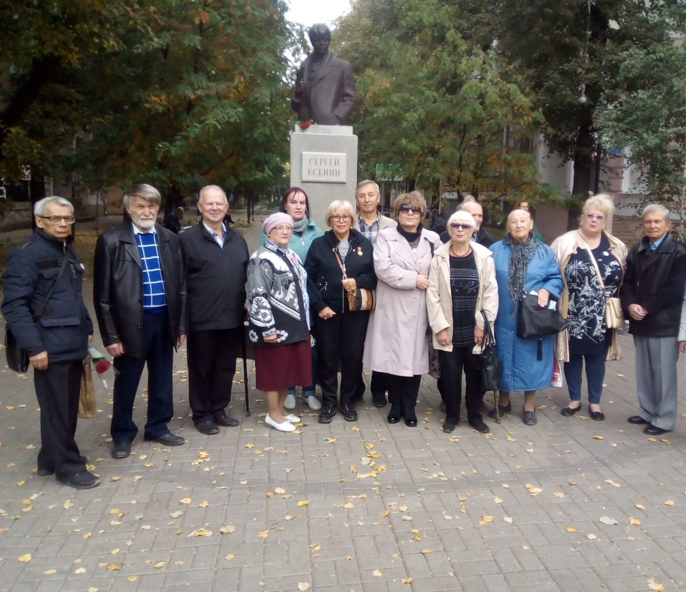

Несмотря на пандемию коронавируса, литературная жизнь Организации не прекращалась. Многие члены, находясь в режиме самоизоляции, подготовили сборники стихов.
Так, Пигарев В.Е. в издательстве ВГПУ опубликовал свой сборник «Философия смысла», представляющий собой «синтез поэзии и прозы».
В июле 2020 г. Нина Петровна Часовских дважды выступала в городской библиотеке им. И. А. Бунина в режиме онлайн с тематическими беседами духовно-нравственной направленности, обращённой к детям: «О празднике Петра и Павла», «О дне памяти Святых Петра и Февронии, дне Семьи, Любви и Верности в православии», которые впоследствии были размещены в интернете: «ВКонтакте» и на сайте библиотеки.
В августе 2020 г. был издан сборник стихов и прозы «Свет юности моей далёкой». Видеопрезентация книги Н.П. Часовских «Свет юности моей далёкой» размещена на страничке ВК.
В сентябре 2020 г. Часовских Н.П. издала поэтический сборник «Моим внукам». 08.09.2020 г. состоялась онлайн-презентация этого сборника в библиотеке №22 им. И. А. Бунина. Ссылка для скачивания файлов, зеркало (файлы будут храниться до 07.03.2021 г.)
19 сентября 2020 года состоялось очередное собрание членов ВГОО «СП «ВОИНСКОЕ СОДРУЖЕСТВО»», на котором были рассмотрены вопросы жизни организации в новых эпидемических условиях, а также перспективы издательской деятельности до конца 2020 г. В этот же день было проведено внеплановое заседание правления. На нём обсуждался вопрос о выводе из списочного состава Зыкиной Тамары Павловны на основании её личного заявления. Просьба Зыкиной Т.П. о выводе её из списочного состава Организации удовлетворена правлением единогласно.
Быкова Л.В. и Старова Э.М. подготовили к изданию по два поэтических сборника.
Логачёва П.В. и Вощинский А.В. подготовили по одному поэтическому сборнику.
Бегенев И.М готовит издание о своём древнем роде Бегина (Бегеневых), которому 2500 лет. Он пишет об этом, опираясь на архивные исторические факты.
Лукина В.Л. обратилась к читателям с поэмой «Путь Пушкина к спасению души». Партолина Т.Н. написала поэму «Моё путешествие в Эмираты», Владимир Сапанюк выступил с сольным концертом в воронежском Дворце культуры «Машиностроителей». Видео.
Международный Союз Русскоязычных писателей провел литературный конкурс «Вчера закончилась война». В нем приняла участие Наталья Игнатьевна Воронова. Она в своем рассказе «Отчизне принес он Победы венец», опубликованном впоследствии в международном сборнике литературных произведений, рассказала о нелегкой фронтовой судьбе своего отца Сафонова Игната Акимовича, о мужестве, героизме красноармейцев в борьбе против немецко-фашистских оккупантов. По итогам конкурса Наталья Воронова получила Диплом Финалиста Международного литературного конкурса «Вчера закончилась война», приуроченного к 75-летию Великой Победы.
В марте в ВГПУ вышел сборник произведений, посвящённых 75-летию Великой Победы «Учительская муза-7». В нем представлены стихотворения, воспоминания, в том числе и наших поэтов, публицистов, краеведов: Бегенева И.М., Долгих М.Ю., Кашкина С.Н., Костенко О.Б., Мартыновой Л.Д., Старовой Э.М.
В канун дня рождения С.Есенина наш поэт Лукина В.Л. участвовала в сетевой акции «Поэт, хранимый памятью народа», посвящённой 125-летию со дня рождения С.А. Есенина. Она послала видеопрочтение стихотворения С. Есенина «Письмо к женщине» и получила сертификат участника. Организатором акции выступили специалисты Брянской областной научной универсальной библиотеки им. Ф.И. Тютчева. Ссылка для скачивания файлов, зеркало.
Лукина В.Л. стала дипломантом Всероссийской акции #Есениана – 2020, проводимой центральной библиотекой г. Усинска республики Коми.
Партолина Т.Н. участвовала в митинге у памятника Сергею Есенину в Воронеже, посвященному 125-летию со дня рождения С.А. Есенина.
…и это далеко не полный список дел, осуществлённых на литературном поприще членами Организации.